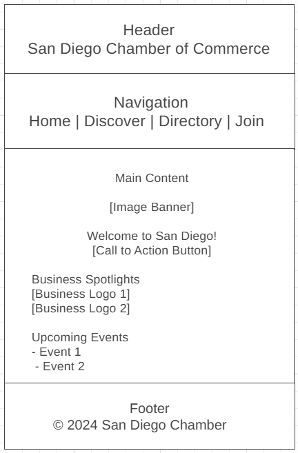
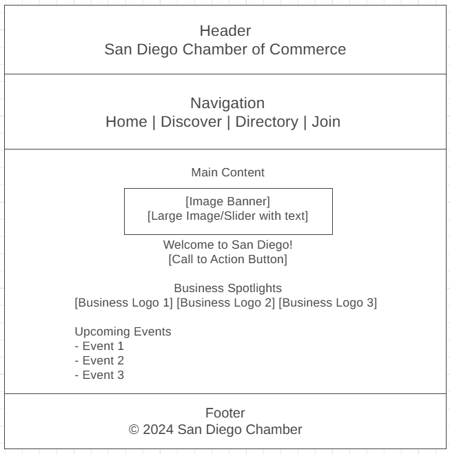

San Diego Chamber of Commerce Site Plan
Site Name
San Diego Chamber of Commerce
This name was selected because San Diego is a vibrant city with a diverse culture.
Site Purpose
The purpose of the website is to:
- Promote local businesses and offer networking opportunities through events, partnerships, and resources.
- Provide information about San Diego's economic development, attractions, and community engagement to attract tourists and new residents.
Scenarios
Common visitor questions:
- What events and programs does the San Diego Chamber offer for small businesses?
- How can I become a member of the San Diego Chamber of Commerce?
- Where can I find a directory of local businesses and services?
Color Schema
Selected colors:
- Primary Color: #00457C (for headings and navigation) - This blue reflects the coastal and business-focused nature of San Diego.
- Secondary Color: #FFF5BE (for background and content areas) - This light color provides a clean and professional look.
Color Palette
Primary Color: #00457C
Secondary Color: #FFF5BE
Typography
Chosen fonts:
- Heading Font: 'Lato', sans-serif (for headings)
- Body Font: 'Open Sans', sans-serif (for paragraphs and body text)
Lato provides a modern and approachable feel, while Open Sans ensures readability across different devices.
Wireframe
Mobile View: Below is a rough sketch of the mobile view layout for the home page.

Desktop View: Below is a rough sketch of the desktop view layout for the home page.
